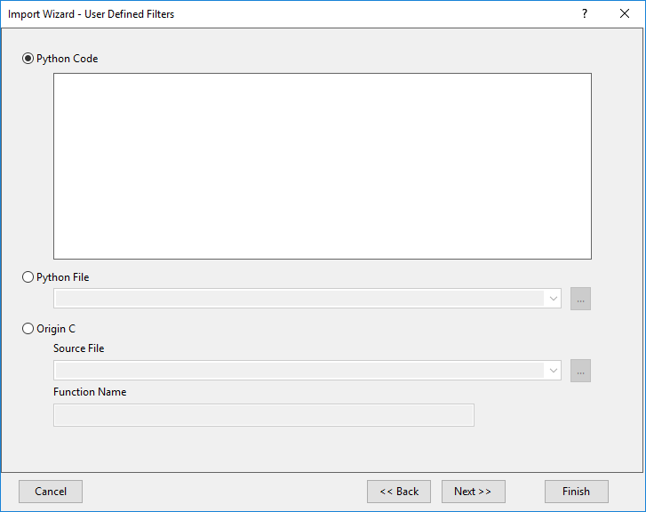

Importassistent, Seite Benutzerdefinierte Filter (Benutzerdefiniert)
ImpWiz-UserFilterPage
Verwenden Sie diese Seite, um entweder einen Python-Code oder eine Origin-C-Datei festzulegen, um die Datendatei zu importieren. Falls Python gewählt wird, kann der Code entweder über einen direkten Eintrag oder über einen Link in eine externe Python-Datei hinzugefügt werden.
- 
Benutzerdefinierte Filterelemente
| Python-Code |
Geben Sie den Python-Code direkt in das Feld ein, um den Filter durchzuführen. Erfahren Sie mehr über Python in Origin.
|
| Python-Datei |
Geben Sie den Pfad der Python-Datei ein, mit der der Datenimport durchgeführt werden soll. Sie können angeben:
- einen absoluten Dateipfad,
- einen Dateipfad relativ zu Ihrem Anwenderordner,
- nur einen Dateinamen, wenn sich die Datei in Ihrem Anwenderdateiordner befindet.
|
| Origin C |
- Quelldatei
- Geben Sie den Pfad der Origin C-Quelldatei ein.
- Als Standardpfad für die Origin C-Datei wird der \OriginC-Unterordner im Origin-Installationsordner angenommen. Sie können einen absoluten Pfad (wie z.B. d:\meineDateien\meineFunktion) festlegen. Dies ist jedoch nicht empfehlenswert, wenn Sie Ihre benutzerdefinierten Funktionen und Importfilter mit anderen teilen möchten.
- Zwei relative Dateipfade (<Anwenderdateiordner> und ) sind in der Auswahlliste verfügbar, die Sie dabei unterstützen, die Eingabe des Dateipfads zu vereinfachen.
- Funktionsname
- Benennen Sie die Funktion (mit Bezug auf die Origin C-Quelldatei), die beim Verarbeiten/Importieren Ihrer Daten in das Zielfenster verwendet werden soll.
|